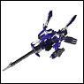
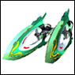
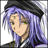

|
|||||||||||||||||||||||||||||||||||||||||||||||||||||||||||
| 【扎夫级战舰】 扎夫级战列舰 [战列舰/武器] |
“特兰斯巴尔皇国军”的战列舰。“艾欧尼亚军”原本也是皇国军，因此也拥有同型舰 |
|
|
| 【三公爵合体核心舰】 三公爵合体核心舰 [战列舰/武器] |
三公爵的舰船与核心合体后的形态。 |
| |
| 【希瓦】 Shiva[角色/通称] | |
特兰斯巴尔皇国中现存的最后一位皇族。 |
|
| |
| 【GA-007】 GA-0000 七号机 [战列舰/武器] |
第七台被发现的纹章机搭载了克罗诺布雷克加农炮，也被称为决战兵器。 |
| |
| 【西格尔德】 西格尔德 [角色/通称] |
特兰斯巴尔皇国军的上层部。全名是「西格尔德·吉达迈亚」 |
| |
| 【吉赛尔级导弹舰】 吉赛尔级导弹舰 [战列舰/武器] |
（真含む）正统特兰斯巴尔皇国军的导弹舰 |
| |
| 【种族灭绝炸弹】 种族灭绝炸弹 [必杀技] |
| 阿妮丝·阿吉特搭乘的纹章机「遗迹掠夺者」释放的必杀技。发射小型重力弹撞击敌人，引发大功率爆炸。具有摧毁周围敌人的威力。 |
|
|
| 【杰拉尔·特兰斯巴尔】 杰拉尔·特兰斯巴尔 [角色/通称] |
特兰斯巴尔第13代皇王。希瓦的生父。在艾欧尼亚战役期间，与其他皇族一同被杀。 |
| |
| 【雪莉】 雪莉 [角色/通称] |
为艾欧尼亚效力的女性，正统特兰斯巴尔皇国军艾尔西欧鲁追击部队的司令官。 |
|
|
| 【锐利射手】 锐利射手 [武器/战列舰] | |
|  | 「EDEN」制造的「纹章机」之一。形式编号「GA-006」 驾驶员是「乌丸·千岁」 拥有特化于长距离战斗的性能。 必杀技是「致命之箭」 |
|
|
| 【射击场】 射击场 [设施] |
艾尔西欧鲁内的设施。佛特经常在这里进行射击训练。 |
|
|
| 【夏多漾】 夏多漾 [角色/通称] | |
“白月”的管理者。 |
|
|
|
| 【垃圾场】 垃圾场 [设施] |
“露克西欧鲁”的设施，宇宙便利店的名称。 |
|
|
| 【朱诺】 朱诺 [行星/卫星] |
| “EDEN”的本星。在“第二次巴鲁法斯克大战”期间被“巴鲁法斯克”占领。 拥有巨大的数据库“图书馆”。 |
|
|
| |
| 【食堂阿姨】 食堂阿姨 [角色·通称] |
| 掌管艾尔西欧鲁食堂的阿姨。 从一般菜单到船员的特制菜品都能做出来的好心阿姨。 （例）七色果冻·1000倍咖喱·关东煮等 |
| |
| 【西里斯高速战斗机】 西里斯高速战斗机 [战列舰/武器] |
在黑暗天使推出之前，地狱猎犬队使用的战斗机。 |
| |
| 【白月】 白月 [战列舰/武器] |
为了对抗“巴鲁法斯克”，“EDEN”建造的两个巨大人工卫星之一。 |
|
|
| 【斯特诺级高速战舰】 斯特诺级高速战舰 [战列舰/武器] |
（真含）“正统特兰斯巴尔皇国”军的高速战舰。 |
|
|
| 【斯特里涅】 斯特里涅 [角色/通称] | |
露克西欧鲁的机械整备员。与莉莉关系很好。对机械有着无比的热爱，因此对损坏机械或强迫机械工作的人，即使是舰长塔克特或可可也不会手下留情。 |
|
| |
| 【强袭爆裂】 强袭爆裂 [必杀技] |
「快感扳机」释放的必杀技。装备的是实体弹 |
|
|
| 【斯帕德级驱逐舰】 [战舰/兵器] |
特兰斯巴尔皇国军的驱逐舰，艾欧尼亚军原本也是皇国军，因此也拥有同型舰 |
|
|
| 【魔法使】 魔法使 [武器/战列舰] | |
|  | 「NEUE」制造的「纹章机」之一。形式编号RA-004 驾驶员是「卡尔拉（特基拉）·墨角兰」 特性是索敌型。必杀技是「六芒星破碎」 |
|
|
| 【正统特兰斯巴尔皇国】正统特兰斯巴尔皇国 [国家·种族] |
废太子艾欧尼亚在制压特兰斯巴尔皇国后，发表的皇国名。 |
| |
| 【泽姆级作战航母】泽姆级作战航母 [战列舰/武器] |
（真含）正统特兰斯巴尔皇国军的作战航母。 |
|
|
| 【赛拉克级突击舰】 赛拉克级突击舰[战列舰/武器] |
（真含）正统特兰斯巴尔皇国军的突击舰 |
|
|
| 【塞尔达尔】 塞尔达尔 [行星/卫星] |
| NEUE中位于时空之门附近的中心行星。 |
|
|
| 【塞尔达尔王朝】 塞尔达尔王朝 [国家/种族] |
国王是「索尔达姆·塞尔达尔」 |
|
|
| 【中央格罗布】 中央格罗布 [国家/种族] |
| 「ABSOLUTE」的中心巨大的巨大人工天体。 突起呈放射状突出，形状像刺猬，各突起起到宇宙船停泊的突堤作用。 中枢有「主核心」，可以集中管理所有的「时空之门」。 由于「时空裂缝」的影响，系统几乎无法使用，但被「EDEN」的人类修复了。 |
|
|
| 【1000倍咖喱】 千倍咖喱 [娱乐/杂货] |
| 马吉克的咖喱店「小茴香」的隐藏菜单。 为兰花制作的兰花专用咖喱。其辣度其他人根本无法食用，但阿妮丝为了尊敬兰花，经过特训后终于能够食用。 从这以后，阿妮丝的委托中似乎也经常被要求制作「兰蒂」。 |
| |
| 【森帕尔士官学校】 森帕尔士官学校 [军团·队] |
| 乌丸千岁毕业的士官学校。在士官学校中也是著名的精英学校。 |
| |
| 【索尔达姆】 索尔达姆 [角色/通称] | |
|  | NEUE的中心行星塞尔达尔的国王。 |
| |
| 感谢您为GA术语集投稿。 |
| 对于您提交的术语，我们将在审查后，将其收录于GAII最新作《永劫回归之时》豪华包特典的小册子《GA百科全书》中。 此外， 对于提交术语的各位，我们将以“为GA术语集贡献力量的各位”的名义在此处刊登您的名字以示感谢。 这次收到了许多GA术语集的投稿，真的非常感谢。 |
© BROCCOLI